# 4.1 Einflussfaktoren Besucherzahl ####
# Erstelle ein df indem die taeglichen Zaehldaten und Meteodaten vereint sind
umwelt <- inner_join(depo_d, meteo, by = c("Datum" = "time"))
# Das zusammenfuehren folgt evtl. in NA-Werten bei gewissen Tagen
sum(is.na(umwelt))KW45 - Multivariate Statistik - Lösung
Biodiversity & Ecosystems (S) Musterloesung
Aufgabe 1: Verbinden von Daten (Join)
Aufgabe 2: Convinience Variablen, Faktoren, Skalieren
# nochmals einige Convinience Variablen
umwelt <- umwelt%>%
mutate(Ferien = if_else(
Datum >= Fruehlingsferien_2019_start & Datum <= Fruehlingsferien_2019_ende |
Datum >= Sommerferien_2019_start & Datum <= Sommerferien_2019_ende |
Datum >= Herbstferien_2019_start & Datum <= Herbstferien_2019_ende |
Datum >= Winterferien_2019_start & Datum <= Winterferien_2019_ende |
Datum >= Fruehlingsferien_2020_start & Datum <= Fruehlingsferien_2020_ende |
Datum >= Sommerferien_2020_start & Datum <= Sommerferien_2020_ende |
Datum >= Herbstferien_2020_start & Datum <= Herbstferien_2020_ende |
Datum >= Winterferien_2020_start & Datum <= Winterferien_2020_ende |
Datum >= Fruehlingsferien_2021_start & Datum <= Fruehlingsferien_2021_ende |
Datum >= Sommerferien_2021_start & Datum <= max(depo$Datum),
"1", "0"))%>%
mutate(Ferien = factor(Ferien))
# Faktor und integer
# Im GLMM wird die Kalenderwoche und das Jahr als random factor definiert. Dazu muss sie als
# Faktor vorliegen.
umwelt <- umwelt %>%
mutate(Jahr = as.factor(Jahr)) %>%
mutate(KW = as.factor(KW))
# Unser Modell kann nur mit ganzen Zahlen umgehen. Zum Glueck habe wir die Zaehldaten
# bereits gerundet.
# pruefe str des df
summary(umwelt)
str(umwelt)
sum(is.na(umwelt))
# unser Datensatz muss ein df sein, damit scale funktioniert
umwelt <- as.data.frame(umwelt)
# Variablen skalieren
# Skalieren der Variablen, damit ihr Einfluss vergleichbar wird
# (Problem verschiedene Skalen der Variablen (bspw. Temperatur in Grad Celsius,
# Niederschlag in Millimeter und Sonnenscheindauer in Minuten)
umwelt <- umwelt %>%
mutate(tre200jx_scaled = scale(tre200jx),
rre150j0_scaled = scale(rre150j0),
sremaxdv_scaled = scale(sremaxdv))Aufgabe 3: Korrelationen und Variablenselektion
# 4.2 Variablenselektion ####
# Korrelierende Variablen koennen das Modelergebnis verfaelschen. Daher muss vor der
# Modelldefinition auf Korrelation getestet werden.
# Erklaerende Variablen definieren
# Hier wird die Korrelation zwischen den (nummerischen) erklaerenden Variablen berechnet
cor <- cor(umwelt[,16:(ncol(umwelt))]) # in den [] waehle ich die skalierten Spalten.
# Mit dem folgenden Code kann eine simple Korrelationsmatrix aufgebaut werden
# hier kann auch die Schwelle für die Korrelation gesetzt werden,
# 0.7 ist liberal / 0.5 konservativ
# https://researchbasics.education.uconn.edu/r_critical_value_table/
cor[abs(cor)<0.7] <- 0 #Setzt alle Werte kleiner 0.7 auf 0 (diese sind dann ok, alles groesser ist problematisch!)
cor
# Korrelationsmatrix erstellen
# Zur Visualisierung kann ein einfacher Plot erstellt werden:
chart.Correlation(umwelt[,16:(ncol(umwelt))], histogram=TRUE, pch=19)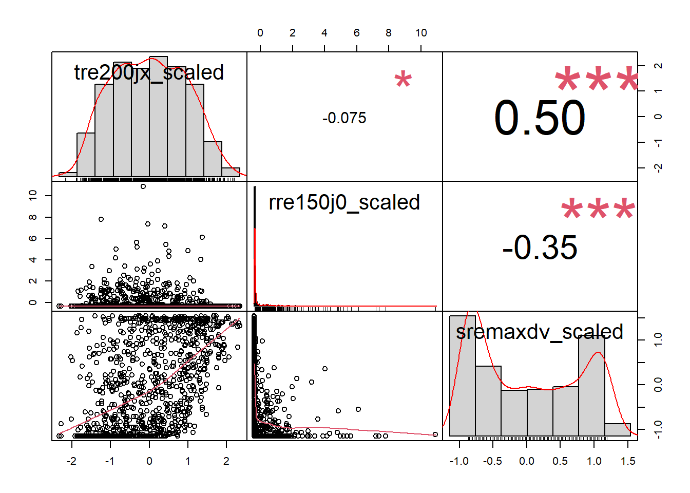
Aufgabe 4 (OPTIONAL): Automatische Variablenselektion
# # Automatisierte Variablenselektion
# # fuehre die dredge-Funktion und ein Modelaveraging durch
# # Hier wird die Formel für die dredge-Funktion vorbereitet
# f <- Total ~ Wochentag + Ferien + Phase +
# tre200jx_scaled + rre150j0_scaled + sremaxdv_scaled
# # Jetzt kommt der Random-Factor hinzu und es wird eine Formel daraus gemacht
# f_dredge <- paste(c(f, "+ (1|KW)", "+ (1|Jahr)"), collapse = " ") %>%
# as.formula()
# # Das Modell mit dieser Formel ausführen
# m <- glmer(f_dredge, data = umwelt, family = poisson, na.action = "na.fail")
# # Das Modell in die dredge-Funktion einfügen (siehe auch ?dredge)
# all_m <- dredge(m)
# # suche das beste Modell
# print(all_m)
# # Importance values der Variablen
# # hier wird die wichtigkeit der Variablen in den verschiedenen Modellen abgelesen
# MuMIn::importance(all_m)
#
# # Schliesslich wird ein Modelaverage durchgeführt
# # Schwellenwert für das delta-AIC = 2
# avgmodel <- model.avg(all_m, rank = "AICc", subset = delta < 500)
# summary(avgmodel)Aufgabe 5: Verteilung der abhängigen Variabel pruefen
# 4.3 Pruefe Verteilung ####
# pruefe zuerst nochmals, ob wir NA im df haben:
sum(is.na(umwelt$Total))
f1<-fitdist(umwelt$Total,"norm") # Normalverteilung
# f1_1<-fitdist((umwelt$Total + 1),"lnorm") # log-Normalvert (beachte, dass ich +1 rechne.
# log muss positiv sein; allerdings kann man die
# Verteilungen dann nicht mehr miteinander vergleichen).
f2<-fitdist(umwelt$Total,"pois") # Poisson
f3<-fitdist(umwelt$Total,"nbinom") # negativ binomial
f4<-fitdist(umwelt$Total,"exp") # exponentiell
# f5<-fitdist(umwelt$Total,"gamma") # gamma (berechnung mit meinen Daten nicht möglich)
f6<-fitdist(umwelt$Total,"logis") # logistisch
f7<-fitdist(umwelt$Total,"geom") # geometrisch
# f8<-fitdist(umwelt$Total,"weibull") # Weibull (berechnung mit meinen Daten nicht möglich)
gofstat(list(f1,f2,f3,f4,f6,f7),
fitnames = c("Normalverteilung", "Poisson",
"negativ binomial","exponentiell", "logistisch",
"geometrisch"))
# die 2 besten (gemaess Akaike's Information Criterion) als Plot + normalverteilt,
plot.legend <- c("Normalverteilung", "exponentiell", "negativ binomial")
# vergleicht mehrere theoretische Verteilungen mit den empirischen Daten
cdfcomp(list(f1, f4, f3), legendtext = plot.legend)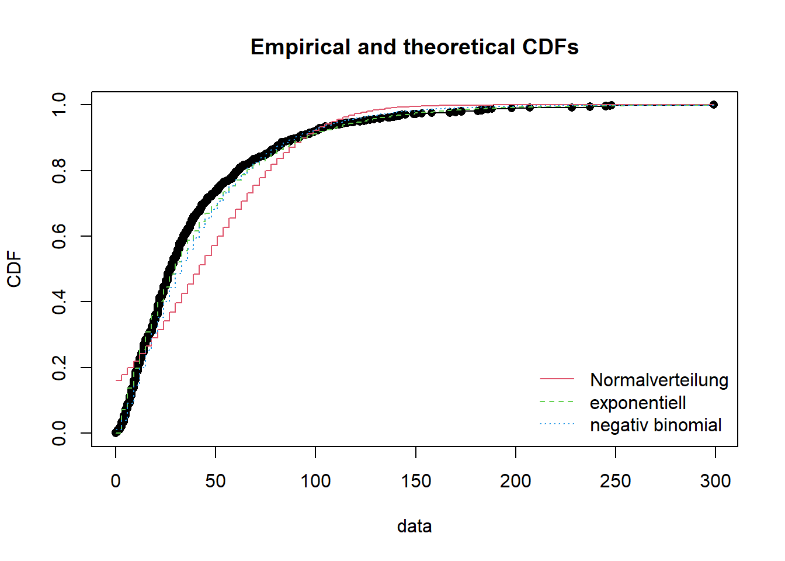
# --> Verteilung ist gemäss AICc negativ binomial. --> ich entscheide
# mich für letztere.Aufgabe 6: Multivariates Modell berechnen
# 4.4 Berechne verschiedene Modelle ####
# Hinweise zu GLMM: https://bbolker.github.io/mixedmodels-misc/glmmFAQ.html
# Ich verwende hier die Funktion glmer aus der Bibliothek lme4. glmer sei neuer,
# schneller und zuverlaessiger als vergleichbare Funktionen.
# Die Totale Besucheranzahl soll durch verschiedene Parameter erklaert werden.
# Die saisonalitaet (KW, Jahr) soll hierbei nicht beachtet werden,
# sie wird als random Faktor bestimmt --> Saisonbereinigung.
# Einfacher Start
# Auch wenn wir gerade herausgefunden haben, dass die Verteilung negativ binomial ist,
# berechne ich für den Vergleich zuerst ein einfaches Modell der Familie poisson.
Tages_Model <- glmer(Total ~ Wochentag + Ferien + Phase +
tre200jx_scaled + rre150j0_scaled + sremaxdv_scaled +
(1|KW) + (1|Jahr), family = poisson, data = umwelt)
summary(Tages_Model)
# Inspektionsplots
plot(Tages_Model, type = c("p", "smooth"))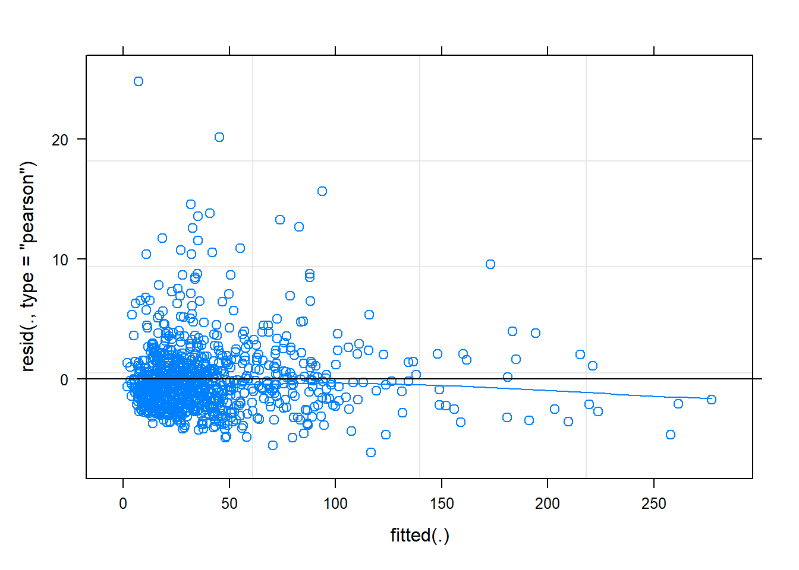
qqmath(Tages_Model)
# pruefe auf Overdispersion
dispersion_glmer(Tages_Model) #it shouldn't be over 1.4
# wir gut erklaert das Modell?
r.squaredGLMM(Tages_Model)
# Berechne ein negativ binomiales Modell
# gemäss AICc die beste Verteilung
Tages_Model_nb <- glmer.nb(Total ~ Wochentag + Ferien + Phase +
tre200jx_scaled + rre150j0_scaled + sremaxdv_scaled +
(1|KW) + (1|Jahr), data = umwelt)
summary(Tages_Model_nb)
plot(Tages_Model_nb, type = c("p", "smooth"))
qqmath(Tages_Model_nb)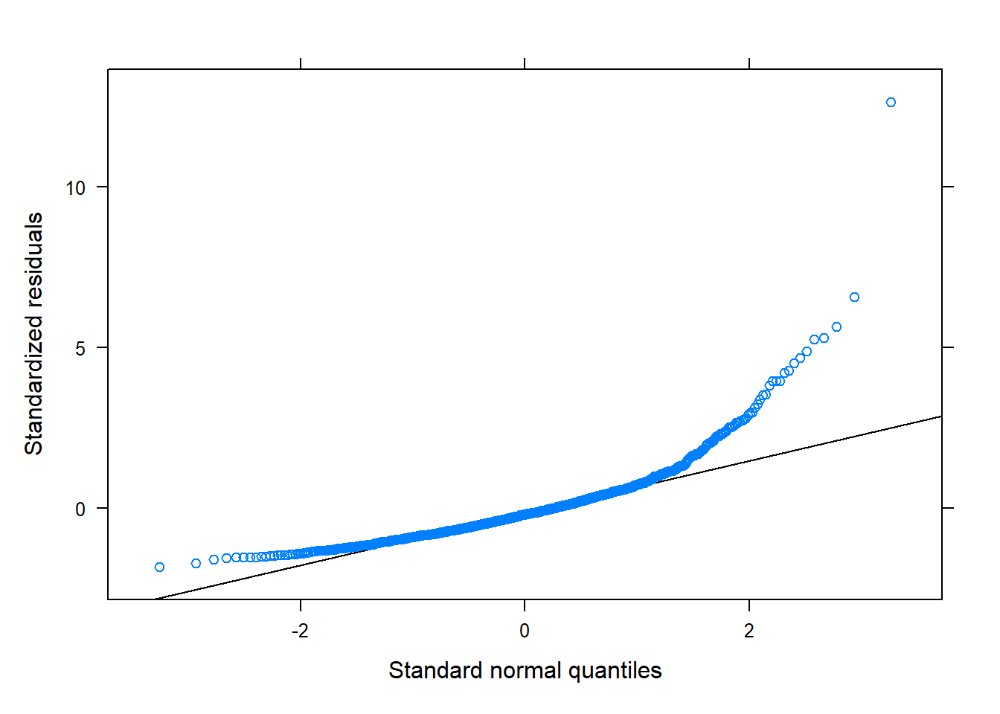
dispersion_glmer(Tages_Model_nb)
r.squaredGLMM(Tages_Model_nb)
# auf quadratischen Term testen ("es gehen weniger Leute in den Wald, wenn es zu heiss ist")
Tages_Model_nb_quad <- glmer.nb(Total ~ Wochentag + Ferien + Phase +
tre200jx_scaled + I(tre200jx_scaled^2) +
rre150j0_scaled + sremaxdv_scaled +
(1|KW) + (1|Jahr), data = umwelt)
summary(Tages_Model_nb_quad)
plot(Tages_Model_nb_quad, type = c("p", "smooth"))
qqmath(Tages_Model_nb_quad)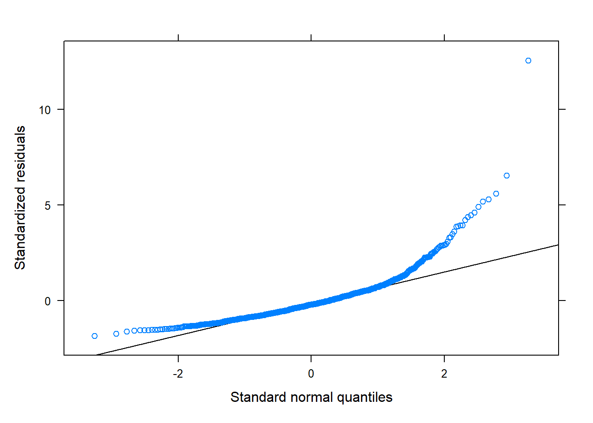
dispersion_glmer(Tages_Model_nb_quad)
r.squaredGLMM(Tages_Model_nb_quad)
# Interaktion testen, da Ferien und / oder Wochentage einen Einfluss auf
# die Besuchszahlen waehrend des Lockown haben koennen!
# (Achtung: Rechenintensiv!)
# Tages_Model_nb_int <- glmer.nb(Anzahl_Total ~ Wochentag * Ferien + Phase +
# tre200jx_scaled + I(tre200jx_scaled^2) *
# rre150j0_scaled + sremaxdv_scaled +
# (1|KW) + (1|Jahr), data = umwelt)
#
# summary(Tages_Model_nb_int)
# plot(Tages_Model_nb_int, type = c("p", "smooth"))
# qqmath(Tages_Model_nb_int)
# dispersion_glmer(Tages_Model_nb_int)
# r.squaredGLMM(Tages_Model_nb_int)
# Vergleich der Modellguete mittels AICc
cand.models<-list()
cand.models[[1]] <- Tages_Model
cand.models[[2]] <- Tages_Model_nb
cand.models[[3]] <- Tages_Model_nb_quad
Modnames<-c("Tages_Model","Tages_Model_nb",
"Tages_Model_nb_quad")
aictab(cand.set=cand.models,modnames=Modnames)
#K = Anzahl geschaetzter Parameter (2 Funktionsparameter und die Varianz)
#Delta_AICc <2 = Statistisch gleichwertig
#AICcWt = Akaike weight in %
# --> Ich entscheide mich bei diesen drei Modellen für das Tages_Model_nb_quad
# Warum: statistisch gleichwertig und ich denke die Quadratur macht Sinn!
# Berechne ein Modell mit exponentieller Verteilung:
# gemäss AICc der Verteilung die zweitbeste
# https://stats.stackexchange.com/questions/240455/fitting-exponential-regression-model-by-mle
Tages_Model_exp <- glmer((Total+1) ~ Wochentag + Ferien + Phase +
tre200jx_scaled + rre150j0_scaled + sremaxdv_scaled +
(1|KW) + (1|Jahr), family = Gamma(link="log"), data = umwelt)
summary(Tages_Model_exp, dispersion=1)
# Inspektionsplots
plot(Tages_Model_exp, type = c("p", "smooth"))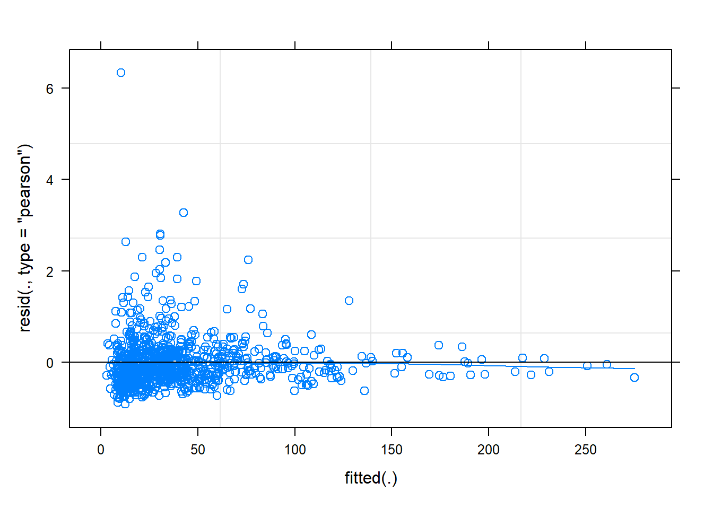
qqmath(Tages_Model_exp)# pruefe auf Overdispersion
dispersion_glmer(Tages_Model_exp) #it shouldn't be over 1.4
# wir gut erklaert das Modell?
r.squaredGLMM(Tages_Model_exp)
# --> Die zweitbeste Verteilung (exp) führt auch nicht dazu, dass die Modellvoraussetzungen besser
# erfüllt werden
# 4.5 Transformationen ####
# Die Modellvoraussetzungen waren überall mehr oder weniger verletzt.
# Das ist ein Problem, allerdings auch nicht ein so grosses.
# (man sollte es aber trotzdem ernst nehmen)
# Schielzeth et al. Robustness of linear mixed‐effects models to violations of distributional assumptions
# https://besjournals.onlinelibrary.wiley.com/doi/10.1111/2041-210X.13434
# Lo and Andrews, To transform or not to transform: using generalized linear mixed models to analyse reaction time data
# https://www.frontiersin.org/articles/10.3389/fpsyg.2015.01171/full
# die Lösung ist nun, die Daten zu transformieren:
# mehr unter: https://www.datanovia.com/en/lessons/transform-data-to-normal-distribution-in-r/
# berechne skewness coefficient
library(moments)
skewness(umwelt$Total)
# A positive value means the distribution is positively skewed (rechtsschief).
# The most frequent values are low; tail is toward the high values (on the right-hand side)
# log 10, da stark rechtsschief
Tages_Model_quad_Jahr_log10 <- lmer(log10(Total+1) ~ Wochentag + Ferien + Phase +
tre200jx_scaled + I(tre200jx_scaled^2) +
rre150j0_scaled + sremaxdv_scaled +
(1|KW) + (1|Jahr), data = umwelt)
summary(Tages_Model_quad_Jahr_log10)
plot(Tages_Model_quad_Jahr_log10, type = c("p", "smooth"))
qqmath(Tages_Model_quad_Jahr_log10)
dispersion_glmer(Tages_Model_quad_Jahr_log10)
r.squaredGLMM(Tages_Model_quad_Jahr_log10)
# lmer zeigt keine p-Werte, da diese schwer zu berechnen sind. Alternative Packages berechnen diese
# anhand der Teststatistik. Achtung: die Werte sind wahrscheinlich nicht präzise!
# https://stat.ethz.ch/pipermail/r-sig-mixed-models/2008q2/000904.html
tab_model(Tages_Model_quad_Jahr_log10, transform = NULL, show.se = TRUE)
# natural log, da stark rechtsschief
Tages_Model_quad_Jahr_ln <- lmer(log(Total+1) ~ Wochentag + Ferien + Phase +
tre200jx_scaled + I(tre200jx_scaled^2) +
rre150j0_scaled + sremaxdv_scaled +
(1|KW) + (1|Jahr), data = umwelt)
summary(Tages_Model_quad_Jahr_ln)
plot(Tages_Model_quad_Jahr_ln, type = c("p", "smooth"))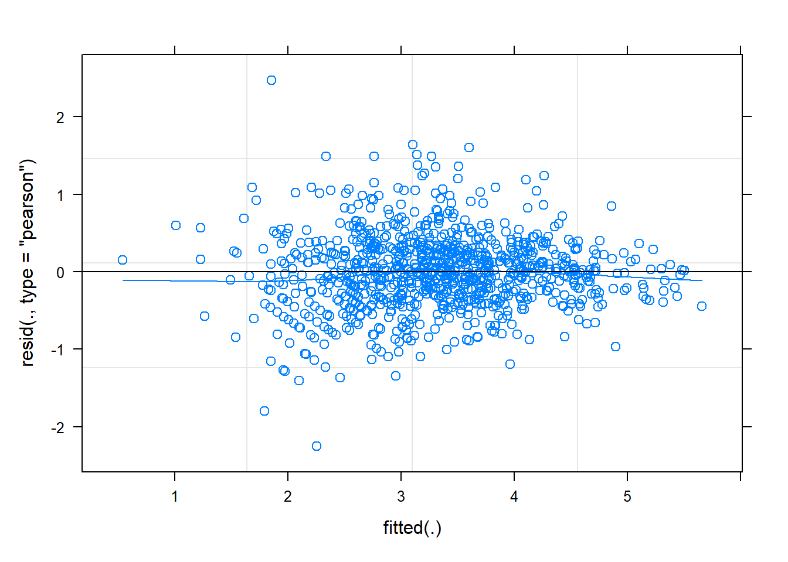
qqmath(Tages_Model_quad_Jahr_ln)
dispersion_glmer(Tages_Model_quad_Jahr_ln)
r.squaredGLMM(Tages_Model_quad_Jahr_ln)
# --> Die Modellvoraussetzungen sind deutlich besser erfüllt jetzt wo wir Transformationen
# benutzt haben. log10 und ln performen beide gleich gut. Da log10 in meinem Bsp
# aber deutlich mehr der Varianz erklärt, entscheide ich mich schliesslich für dieses Modell.
# Zusatz: ACHTUNG - Ruecktransformierte Regressionskoeffizienten zu erlangen (fuer die Interpretation, das Plotten),
# ist zudem nicht moeglich (Regressionskoeffizienten sind nur im transformierten Raum linear).
# Ein ruecktransformierter Regressionskoeffiziente haette eine nicht-lineare Beziehung mit der
# abhaengigen Variable.
# 4.6 Exportiere die Modellresultate ####
# (des besten Modells)
tab_model(Tages_Model_quad_Jahr_log10, transform = NULL, show.se = TRUE)
# The marginal R squared values are those associated with your fixed effects,
# the conditional ones are those of your fixed effects plus the random effects.
# Usually we will be interested in the marginal effects.Aufgabe 7: Modellvisualisierung
# 4.7 Visualisiere Modellresultate ####
# ZUSATZ: Wir haben die Wetterparameter skaliert.
# Fuer die Plots muss das beruecksichtigt werden: wir stellen nicht die wirklichen Werte
# dar sondern die skalierten. Mit folgendem Befehl kann man die Skalierung nachvollziehen:
# attributes(umwelt$tre200jx_scaled)
# Die Skalierung kann rueckgaengig gemacht werden, indem man die Skalierten werte mit
# dem scaling factor multipliziert und dann den Durchschnitt addiert:
# Bsp.: d$s.x * attr(d$s.x, 'scaled:scale') + attr(d$s.x, 'scaled:center')
# mehr dazu: https://stackoverflow.com/questions/10287545/backtransform-scale-for-plotting
# --> wir bleiben aber bei den skalierten Werten, leben damit und sind uns dessen bewusst.
# Auch beim Plotten der Modellresultate gilt:
# visualisiere nur die Parameter welche nach der Modellselektion uebig bleiben
# und signifikant sind!
# plot_model / type = "pred" sagt die Werte "voraus"
# achte auf gleiche Skalierung der y-Achse (Vergleichbarkeit)
# Temperatur
t <- plot_model(Tages_Model_quad_Jahr_log10, type = "pred", terms =
"tre200jx_scaled [all]", # [all] = Model contains polynomial or cubic /
#quadratic terms. Consider using `terms="tre200jx_scaled [all]"`
# to get smooth plots. See also package-vignette
# 'Marginal Effects at Specific Values'.
title = "", axis.title = c("Tagesmaximaltemperatur [°C]",
"Fussgaenger:innen pro Tag [log]"))
# fuege die Achsenbeschriftung hinzu. Hier wird auf die unskalierten Werte zugegriffen.
labels <- round(seq(floor(min(umwelt$tre200jx)), ceiling(max(umwelt$tre200jx)),
# length.out = ___ --> Anpassen gemaess breaks auf dem Plot
length.out = 5), 0)
(Tempplot <- t +
scale_x_continuous(breaks = c(-2,-1,0,1,2),
labels = c(labels))+
# fuege die y- Achsenbeschriftung hinzu. Hier transformieren wir die Werte zurueck
scale_y_continuous(breaks = c(0,0.5,1,1.5,2),
labels = round(c(10^0, 10^0.5, 10^1, 10^1.5, 10^2),0),
limits = c(0, 2))+
theme_classic(base_size = 20))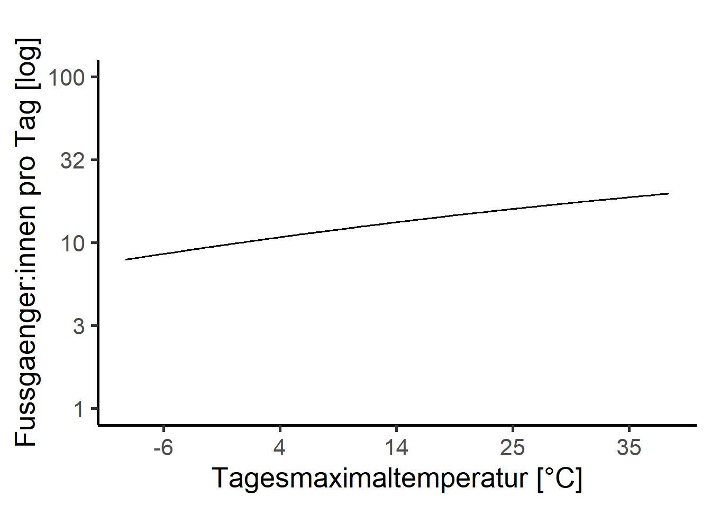
# ggsave("temp.png", width=15, height=15, units="cm", dpi=1000,
# path = "fallstudien/_R_analysis/results/")
# Regen
t <- plot_model(Tages_Model_quad_Jahr_log10, type = "pred", terms = "rre150j0_scaled",
title = "", axis.title = c("Halbtagessumme Niederschlag [mm]",
"Fussgaenger:innen pro Tag [log]"))
labels <- round(seq(floor(min(umwelt$rre150j0)), ceiling(max(umwelt$rre150j0)),
length.out = 4), 0)
(t + scale_x_continuous(breaks = c(0,4,8,12), labels = c(labels))+
scale_y_continuous(breaks = c(0,0.5,1,1.5,2),
labels = round(c(10^0, 10^0.5, 10^1, 10^1.5, 10^2),0),
limits = c(0, 2))+
theme_classic(base_size = 20))
# ggsave("rain.png", width=15, height=15, units="cm", dpi=1000,
# path = "fallstudien/_R_analysis/results/")
# Sonne
t <- plot_model(Tages_Model_quad_Jahr_log10, type = "pred", terms = "sremaxdv_scaled",
title = "", axis.title = c("Sonnenscheindauer [min]",
"Fussgaenger:innen pro Tag [log]"))
labels <- round(seq(floor(min(umwelt$sremaxdv)), ceiling(max(umwelt$sremaxdv)),
length.out = 3), 0)
(t + scale_x_continuous(breaks = c(-1,0,1), labels = c(labels))+
scale_y_continuous(breaks = c(0,0.5,1,1.5,2),
labels = round(c(10^0, 10^0.5, 10^1, 10^1.5, 10^2),0),
limits = c(0, 2))+
theme_classic(base_size = 20))
# ggsave("sun.png", width=15, height=15, units="cm", dpi=1000,
# path = "fallstudien/_R_analysis/results/")
# Phase
t <- plot_model(Tages_Model_quad_Jahr_log10, type = "pred", terms = "Phase",
title = "", axis.title = c("Phase",
"Fussgaenger:innen pro Tag [log]"))
(lockplot <- t +
scale_y_continuous(breaks = c(0,0.5,1,1.5,2),
labels = round(c(10^0, 10^0.5, 10^1, 10^1.5, 10^2),0),
limits = c(0, 2))+
theme_classic(base_size = 20))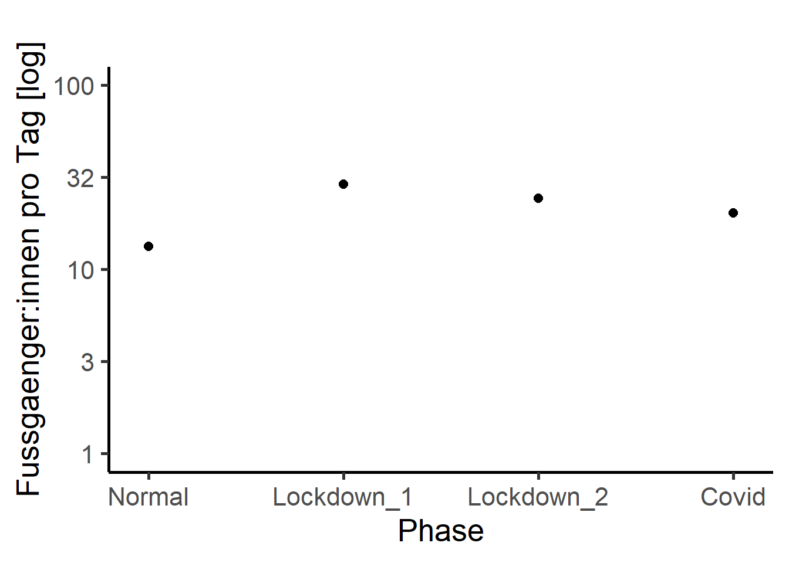
# ggsave("phase.png", width=15, height=15, units="cm", dpi=1000,
# path = "fallstudien/_R_analysis/results/")
# Ferien
t <- plot_model(Tages_Model_quad_Jahr_log10, type = "pred", terms = "Ferien",
title = "", axis.title = c("Ferien",
"Fussgaenger:innen pro Tag [log]"))
(ferienplot <- t + scale_x_continuous(breaks = c(0,1), labels = c("Nein", "Ja"))+
scale_y_continuous(breaks = c(0,0.5,1,1.5,2),
labels = round(c(10^0, 10^0.5, 10^1, 10^1.5, 10^2),0),
limits = c(0, 2))+
theme_classic(base_size = 20))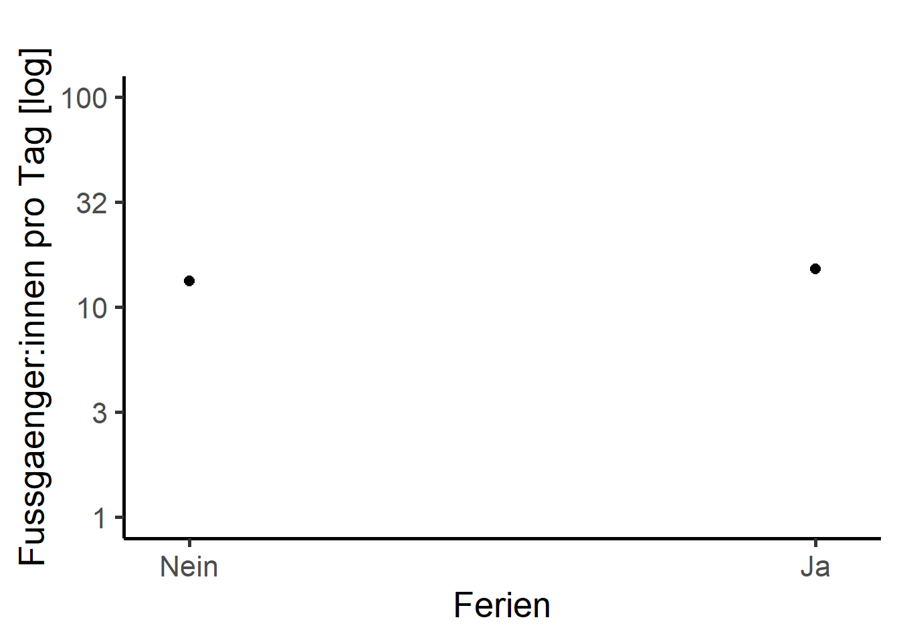
# ggsave("ferien.png", width=15, height=15, units="cm", dpi=1000,
# path = "fallstudien/_R_analysis/results/")
# Wochentag
t <- plot_model(Tages_Model_quad_Jahr_log10, type = "pred", terms = "Wochentag",
title = "", axis.title = c("Wochentag", "Fussgaenger:innen pro Tag [log]"))
(wdplot <- t + scale_y_continuous(breaks = c(0,0.5,1,1.5,2),
labels = round(c(10^0, 10^0.5, 10^1, 10^1.5, 10^2),0),
limits = c(0, 2))+
theme_classic(base_size = 20))+
theme(axis.text.x = element_text(angle = 45, vjust = 1, hjust=1))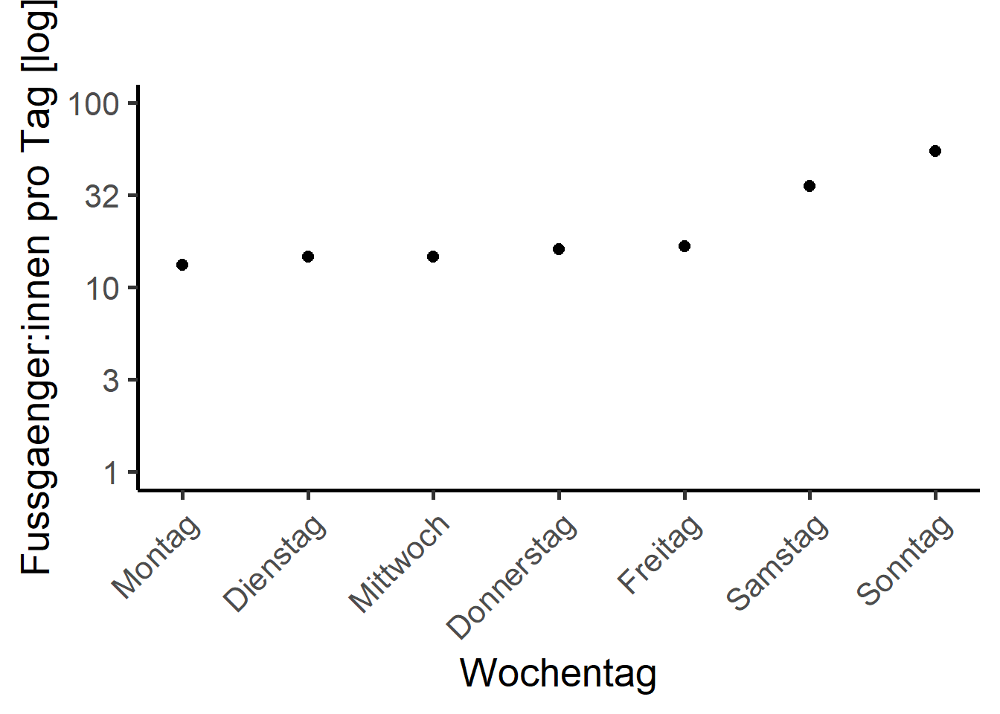
# ggsave("wd.png", width=15, height=15, units="cm", dpi=1000,
# path = "fallstudien/_R_analysis/results/")